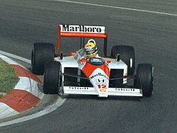

Maior piloto da história do automobilismo
Ayrton Senna da Silva foi um piloto de Fórmula 1, empresário e filantropo brasileiro. Senna foi campeão mundial da categoria três vezes, em 1988, 1990 e 1991. Começou sua carreira competindo no kart em 1973 e em carros de fórmula em 1981, quando venceu as Fórmulas Ford 1600 e 2000. Em 1983, conquistou o título do Campeonato Britânico de Fórmula 3, batendo vários recordes.

Este mini-site apresenta um resumo da vida e carreira de Ayrton Senna. Navegue abaixo para explorar mais.